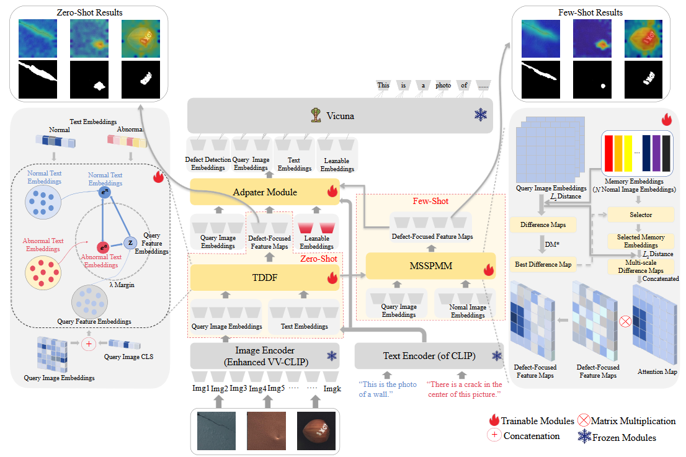
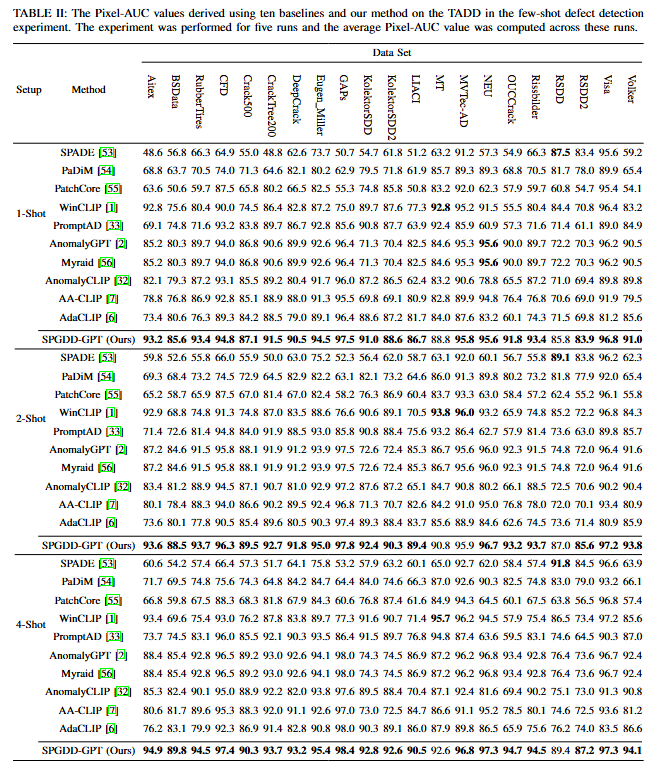
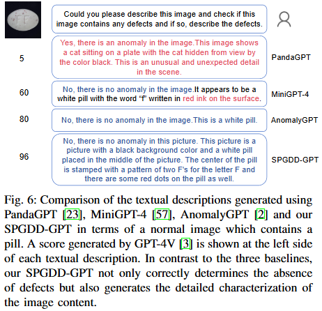
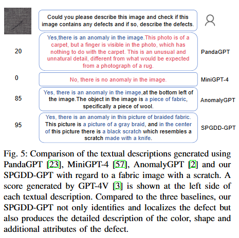

SPGDD-GPT: Image-Text-Driven Generic Defect Diagnosis Using a Self-prompted Large Vision-Language Model
|  |
Abstract
Large Vision-Language Models (LVLMs) mainly rely on template-generated textual descriptions to understand defects. This reliance impairs the performance of these models for Industrial Defect Detection (IDD) because they typically lack specialized knowledge. On the other hand, the majority of existing IDD methods only utilize the contrastive loss function for image-to-text feature alignment, which limits their ability to focus on defective regions. In addition, these methods usually use cosine similarity for contextual learning, which also restricts their ability to understand and adapt to complex contexts. To address these issues, we first collect a large-scale defect data set with textual descriptions, namely, the Text-Augmented Defect Data Set (TADD), to fine-tune an LVLM for defect description. We also propose a Self-prompted Generic Defect Diagnosis (including Defect Detection and Defect Description) LVLM, i.e., the SPGDD-GPT. This method can effectively utilize contextual information through a Multi-scale Self-prompted Memory Module (MSSPMM) and a Text-Driven Defect Focuser (TDDF) that we deliberately design, to adapt to unseen defect categories and focus on abnormal regions. Experimental results show that our method normally achieves the better performance than its counterparts across the 21 subsets of TADD under the 1-shot, 2-shot and 4-shot defect detection settings, demonstrating strong detection and generalization capabilities1. The proposed method can also generate a textural description of the defects contained in each test image. These promising results should be due to the proposed MSSPMM and TDDF and the large-scale TADD.
Links

Experimental Results
|  |
|  |  |